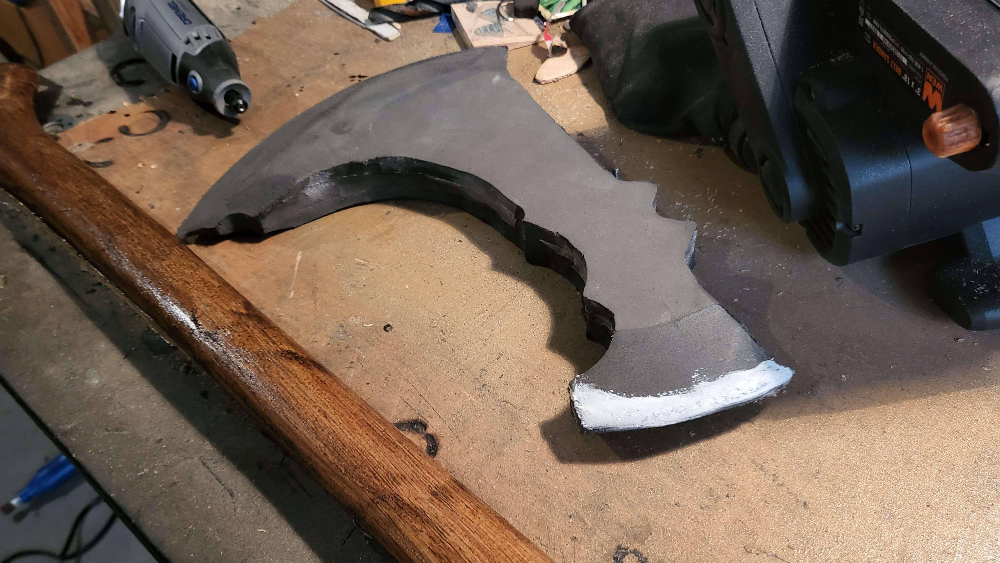
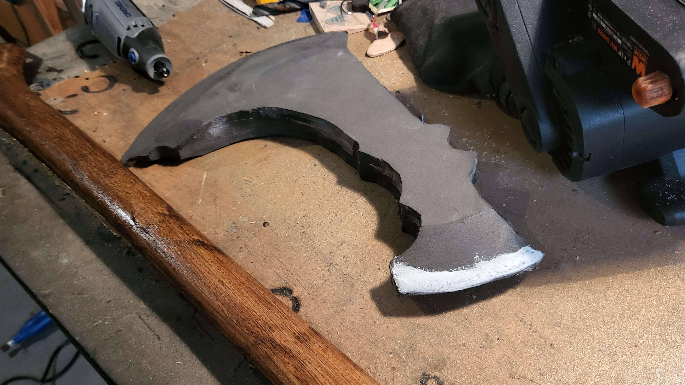

This is my Leviathan Axe build, from God of War (2018) and God of War: Ragnarok.
This build took me about one and a half weeks of off-and-on work. The axe handle was picked up at an Ace Hardware
and stained with a nice dark wood stain, and then I gave it a few black washes. The head of the axe is made of three
layers of 12mm floor mat foam, sanded down at the front and back to give it the sharpened look. In order to sell that
the axe is actually sharp, I painted the edges with a brighter silver than the rest of the head.
I used a craft knife and a heat gun to achieve the markings and runes. At first, I was really trying to get a one-to-one replica of the runes from the game but
ended up doing my own runes that were evocative of the game. The game's runes were a little too small and complicated. While you can see some layer separation on the head of the axe, it's not too noticeable.
If I did this build again, I'd probably wrap the head of the axe in a thin layer of craft foam to cover the layer separation. I’d also add a bit more detail in the area where the enchantments are supposed to go.
With that said, I’m still pretty happy with the way this build turned out.
 
